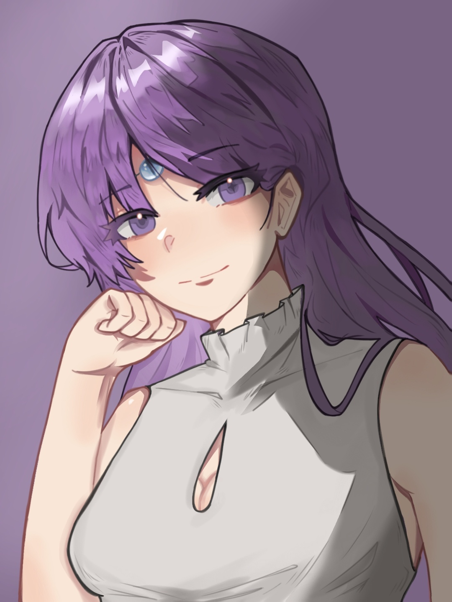
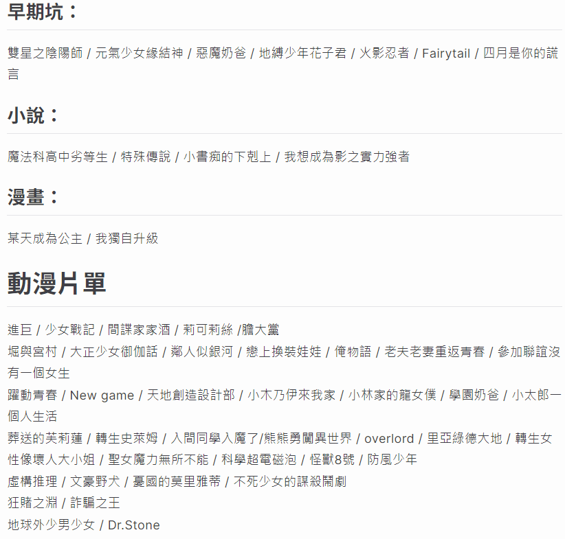
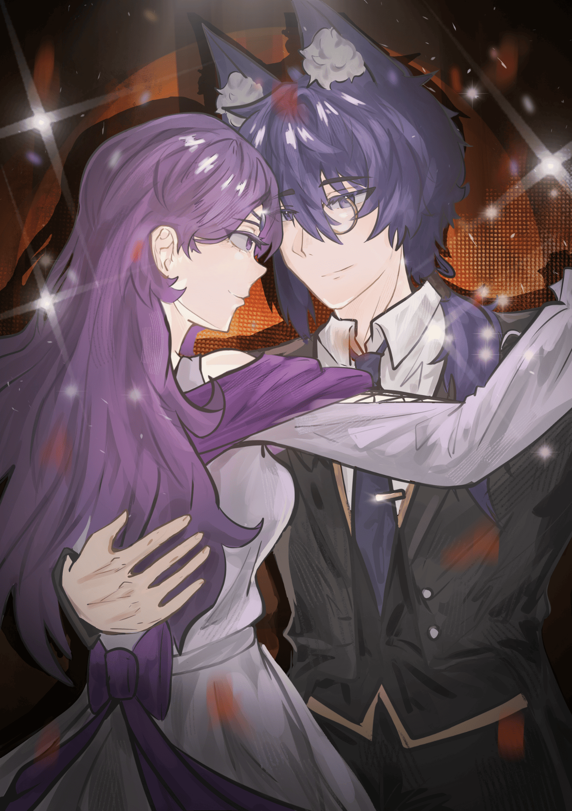
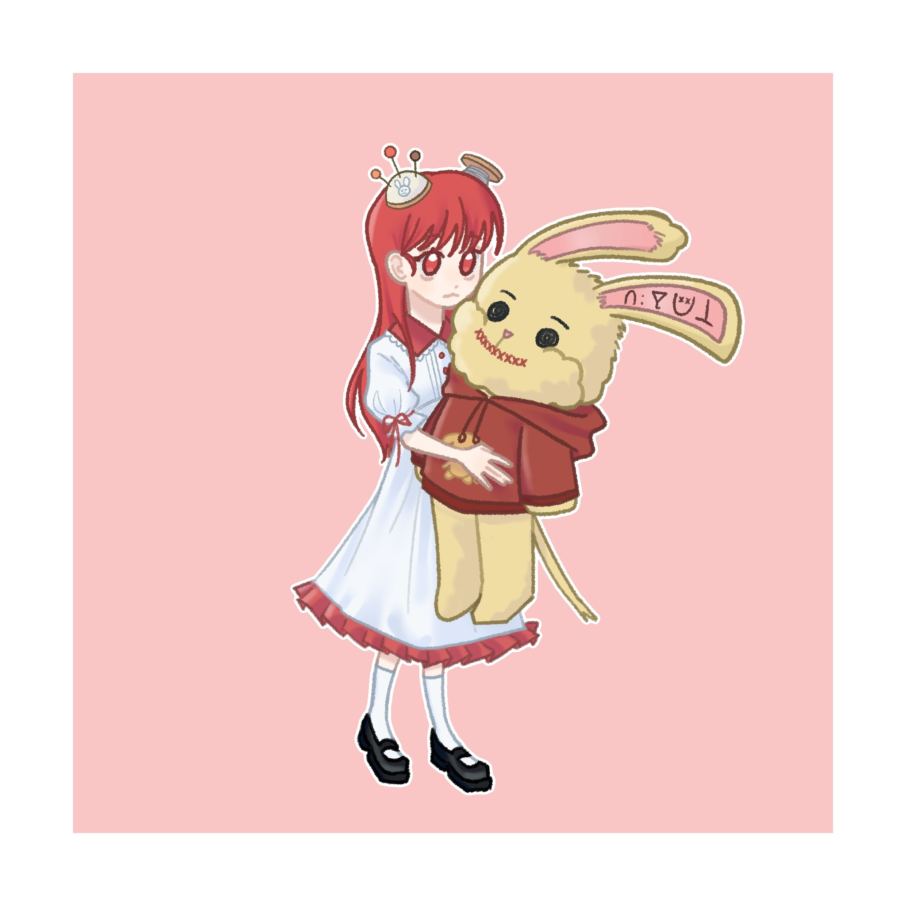

莉特的個人網站
我是莉特特特特！
因為不會用carrd，所以用魔法做了一個。
希望背景圖片不會丟失...
✨更新日期：2025/10/17✨
我是莉特特特特！
因為不會用carrd，所以用魔法做了一個。
希望背景圖片不會丟失...
✨更新日期：2025/10/17✨
name：維爾莉特 / 莉特 / 紫妍，隨意取，我知道你在叫我也ok！
生理女、20y↑是脆皮大學生
養原創oc&獵人oc
✨獵人：比司吉推不拒同擔嫁✨
自認好相處，想多多交友。喜歡到處留言，按❤️
覺得我和你距離太近請直說 👉👈
藝術能力趨近於0(努力緩慢學畫畫)
沒回≠討厭你，是通知被吃掉...
！努力營業中！
⭕️暗殺 ⭕️海巡 ⭕️私訊 ⭕️電話(熟一點)
⭕️中文 ⭕️散裝英文 🔺日本語を勉強中です
無腦角色黑、直男叫我親暱稱呼、婉拒的夢向(彼多)、偷盜圖、拿我圖餵ai、雙面人、大眾雷
婉拒的夢向(獵人_彼多、大多數的官配)
小黃臉：🤣🥹😆😅😂之類的
四處和人貼貼：可能 比較 沒有距離感 我很不好意思😅
全員推(非夢向)：
- 我超容易喜歡一部作品就全員都喜歡（再次強調非夢向，單純覺得每個角色都很好）
- 但是記憶力不好有些角色可能比較沒印象(會努力記住)
- 喜歡的作品會覺得裡面的每一個角色都很棒所以全員推
二次元濃度混雜：基本上什麼都看，看的種類混雜
喜歡一部作品卻不一定追原作：喜歡動漫卻不追小說or動漫、喜歡完結的作品，不喜歡追更新
記憶力不好：但我會努力記住大家~
名偵探柯南：每年必看電影、從小學會嗑cp的好地方
獵人(動漫)：大家都是好孩子，但婉拒彼多夢女…
七大罪（本傳）：官配夢女婉拒
櫻蘭高校：討厭春緋的人不要認識我
在伸展台上微笑：都村育人&藤戶千雪
排少：全推(非夢向)
能幹貓今天也憂鬱：請賜我一個諭吉
藥師少女的獨語：壬氏&貓貓
咒術迴戰(動漫)
我推的孩子：撇除爛尾…
地。-關於地球的運動-：抽空補漫畫中
本名：維爾莉特·瓦奧萊特
通稱：莉特
性別：女
職業：魔法鍛造師
性格：俏皮、溫柔、游刃有餘，面對一些事情會選擇迂迴戰術（裝笨）。
憧憬：自由
戀愛對象：早風やなぎ
也就是背景圖的某隻狐狸
🔽點圖片解鎖更多：notion網站持續完善中🔽
本名：紗骨·維萊塔
日文：サコ・ヴィレッタ
字母拼寫：Sako • Villetta
性別：女
年齡：20y
個人向說明：會與劇中角色有交集，皆非愛情向
偏愛比司吉：會出現紗骨與比司吉的貼貼圖
- 千柚黎｜西索·莫羅｜童年組
🔽點圖片解鎖更多：notion網站持續完善中🔽
偏愛：很喜歡他/他家
交好：常在留言區互動 / 會出現在主頁之中。
雙面捧：官配99、小情侶鎖死
夢向相關互動方式：分享貼文在限動（但我常常忘記）所以其實我不常分享👉👈我很抱歉我的友列們
友列其實夢向沒怎麼撞到
列出來的原因：偷偷表白喜歡的夢向，以及怕有人被創到...
小星｜曖昧組
雪貂｜愛ㄚ愛ㄚ
珞奈｜維珞山丘
梳子｜梳莉特髮
西柚｜西柚冰紗
冬冬｜讀心之音
小閻｜夏日閻妍
一一｜狸花莉莉特
夢向分類僅將深坑部分單獨寫出來，乙遊太容易撞所以也拉出來寫了
✦名偵探柯南：
💫諸伏高明
✦獵人：
💫西索、雷歐力、酷拉皮卡
✦排少：
💫影山飛雄、及川徹
✦我推的孩子：
💫黑川茜
✦著名乙遊：
💫秦徹
✦其他IP：
💫潔世一、チョロ松、愛麗速子、櫻遙、翠石伊織、里蘇特涅羅、爆豪勝己、中原中也、芥川龍之介